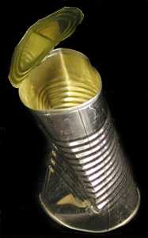

The Challenge -
Modern tin can

Tin cans were invented in the 1830s. Tin openers were not invented until around 1850 so the first tin cans were opened with a hammer and chisel.
This can is part of the rubbish left at the site by the archaeological team. Good archaeologists should take away everything they bring so it is usually only the rubbish left by ancient people that is discovered in excavations.
|
|